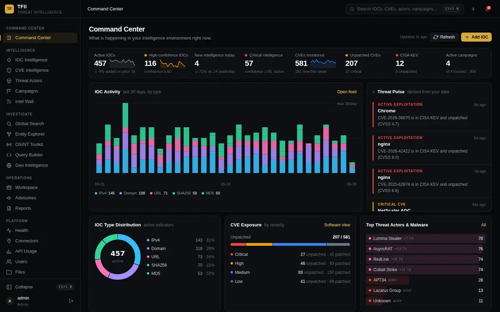
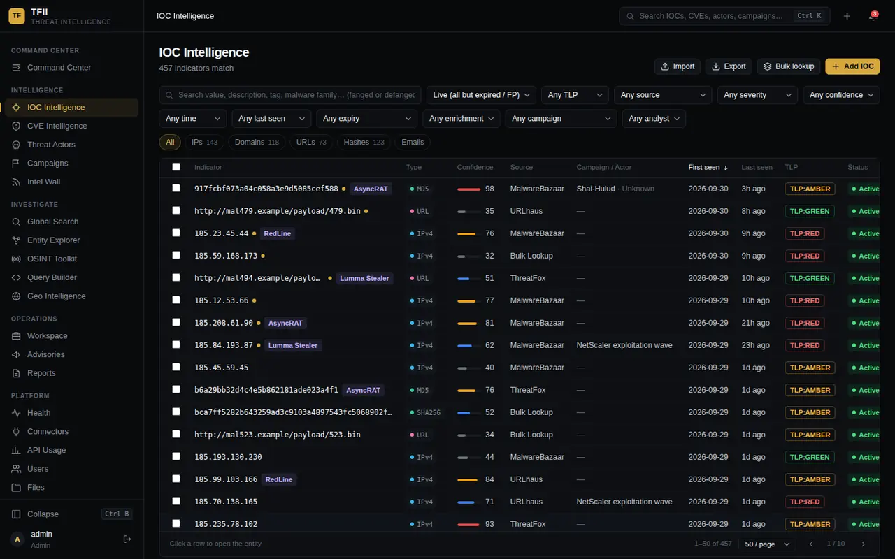
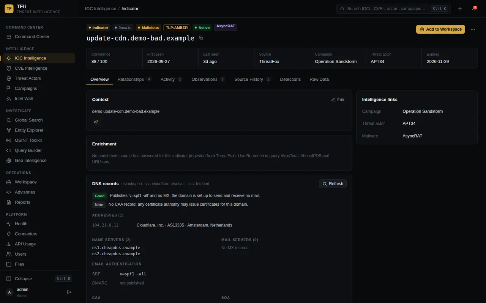
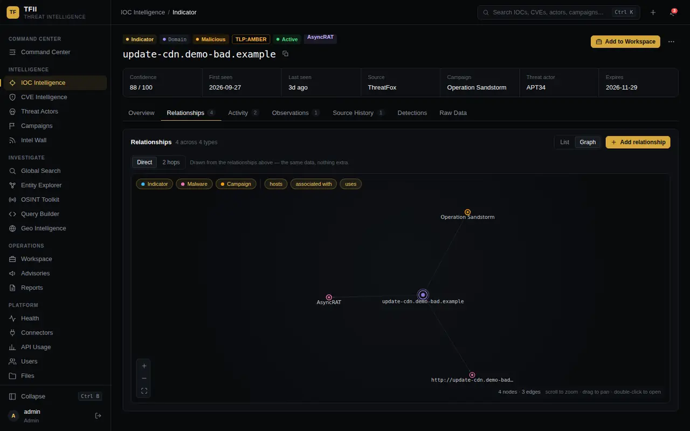
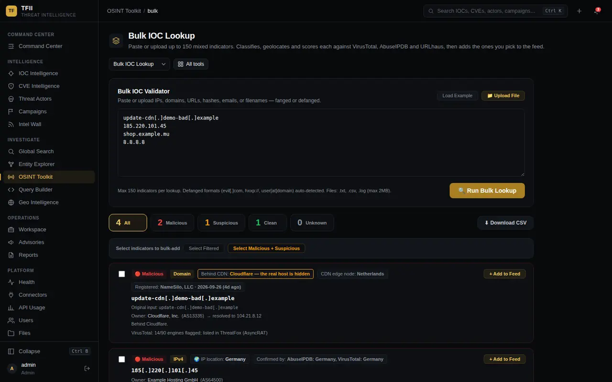
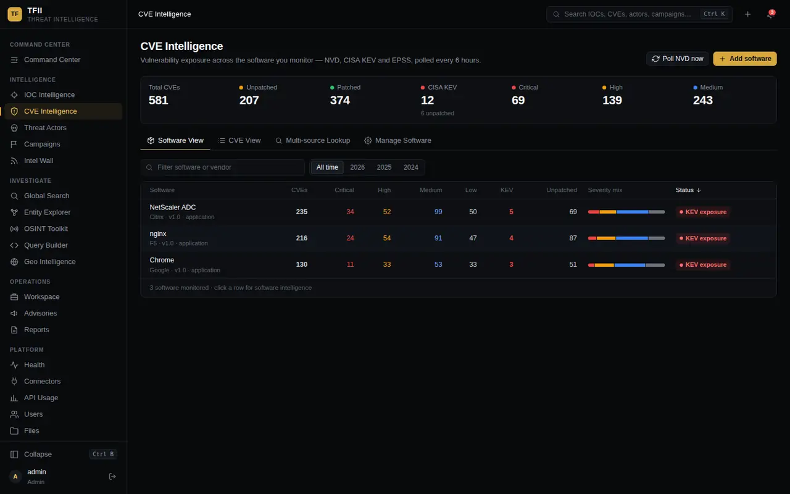
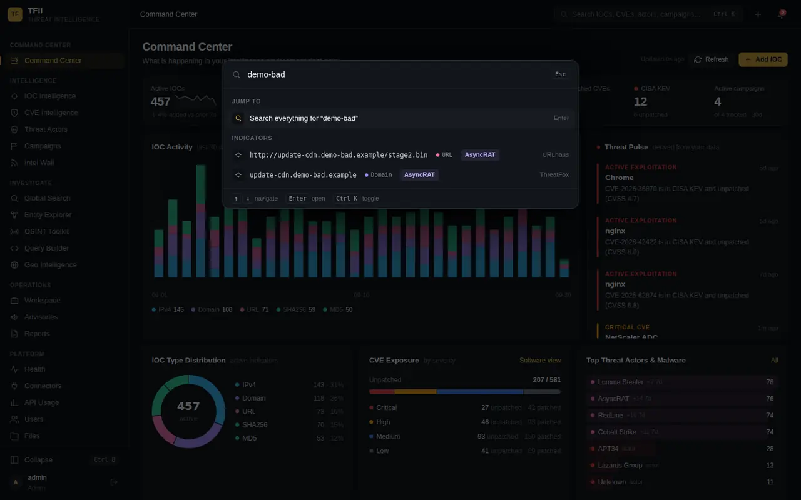
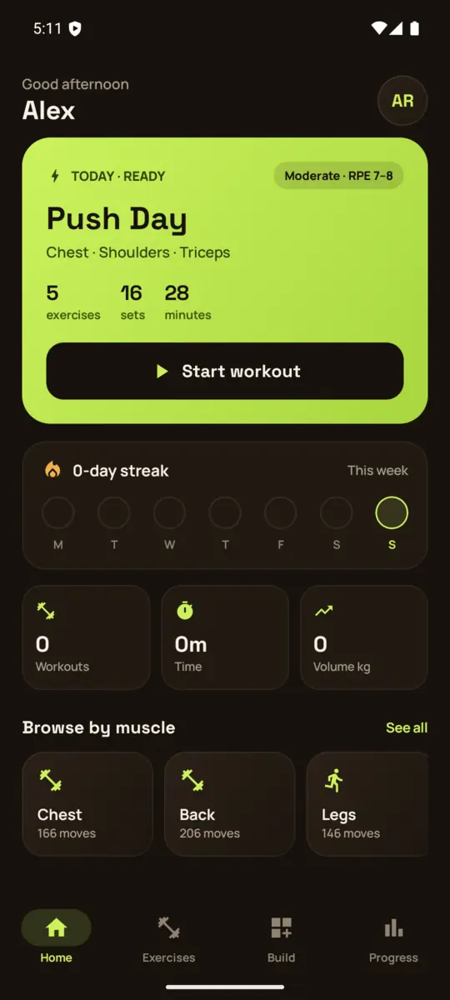
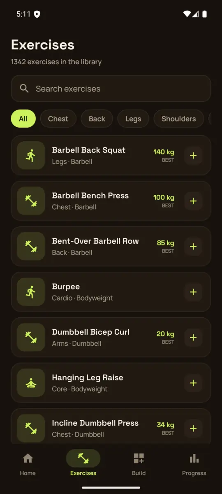
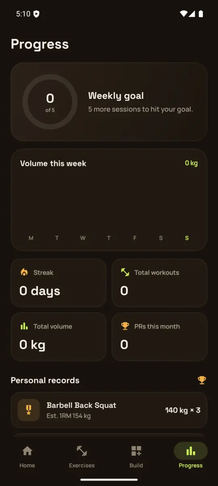

Shot 01 · Detection
Detect.
KQL analytics rules, hunting queries and dashboards tuned against real identity, endpoint and cloud attack scenarios — higher alert fidelity, fewer false positives for the analysts who live in the queue.
Security engineer working across Microsoft Sentinel, Defender XDR and Entra ID — building detection, telemetry pipelines and threat-hunting capability for enterprise and government clients. Delivered a full government SOC with zero post-deployment rework.
Critical infrastructure onboarded against a 10-day scope
Monthly log-ingestion reduction across client tenants, detection coverage intact
Post-deployment rework on a full government SOC build
Certifications earned, with SC-500 and SC-401 in progress
KQL analytics rules, hunting queries and dashboards tuned against real identity, endpoint and cloud attack scenarios — higher alert fidelity, fewer false positives for the analysts who live in the queue.
End-to-end telemetry pipelines through Azure Monitor Agent, DCRs and native connectors — then continuous checks on connector health and data quality so monitoring never silently breaks.
Proactive threat hunting and threat intelligence — IOC validation, malware analysis and vulnerability assessment, mapped to MITRE ATT&CK and feeding straight into incident response and containment.
Filtering low-value events and tuning data connectors to cut spend — without giving up detection coverage. Security that scales across multi-client SLAs and stays affordable to run.
I'm a Security Engineer who builds and operates enterprise and government SOC environments. My core is the Microsoft security stack — Sentinel, Defender XDR and Entra ID — across Azure and hybrid estates.
I like the engineering half of security: onboarding log sources properly, writing KQL that holds up in production, and tuning noise out of the pipeline so analysts spend their time on the alerts that matter.
My background in penetration testing and SOC internships gives me the attacker's view of the same environment — which is what makes a detection actually useful.
KQL analytics rules, hunting queries and Sigma content tuned for fidelity, not volume.
Log-source onboarding, AMA/DCR pipelines, connector health and ingestion-cost control.
Hypothesis-led hunts, IOC validation and ATT&CK mapping that feed incident response.
Entra ID, PIM, Defender for Endpoint/Cloud and Purview DLP administration and review.
From SOC internships to building production SOCs for government clients.
Ansen Technologies (formerly Anxinsec) · Abu Dhabi, UAE
Virtual Team Information Technology · Abu Dhabi, UAE
Sutherland Global Services (Amazon) · Kochi, India
Ehackify Cybersecurity · Kochi, India
Penetration Testing Intern — Jan to Mar 2024
SOC Intern — Apr to Jun 2024
CFSS Cyber Forensics Solutions · Kochi, India
A staged intrusion and the points where a well-tuned SOC catches it. Pick a stage, or let it play. Detections like these live as analytics rules in Sentinel.
A convincing “invoice” email lands, linking to a fake Microsoft sign-in page.
Email and URL-click telemetry flags the lure before most users have even seen it.
Harvested credentials are replayed from an unfamiliar country — down a legacy path with no MFA prompt.
Sign-in risk signals stand out sharply against the user's normal pattern of life.
A macro launches PowerShell with an encoded payload to fetch the next stage.
Endpoint process telemetry shows an Office app spawning PowerShell — rarely legitimate, easy to spot.
LSASS memory is dumped through a trusted system DLL, so no tooling ever touches disk.
A living-off-the-land trick — but the command line and the target process give it away.
A service account starts logging on to hosts it has never touched before.
Service accounts have a predictable footprint — so any deviation is loud once identity and endpoint data are joined up.
Data starts leaving for an external endpoint in unusually large transfers.
Egress volume, firewall logs and DLP policy all get a vote — and together they rarely miss.
Security tooling, training platforms and Android apps — all open on GitHub.
ThreatFeed Intelligence Platform
A self-hosted, open-source workspace that pulls public threat feeds and CVE data into one place — and shows its reasoning for every verdict.







Exam prep for SC-200, SC-401 and SC-500 — quizzes, flashcards, timed mocks, plus a simulated Defender XDR / Sentinel / Azure lab with a real KQL engine and a full intrusion buried in the telemetry.
A weekly SOC reporting workbook for Microsoft Sentinel: incident trend, ingestion volume and cost, top log sources, MITRE tactic coverage, blocked IPs and failed-login leaders — with a flexible reporting range.
Tasker-grade automation and Modes for any Android phone. Uses Shizuku to turn perishable shell authority into permanent grants that survive reboots, and says plainly when a step can't run.
A fast, private, 100% offline Android workout tracker — no account, no analytics. Log sets, chase PRs and build streaks across a 1,300+ exercise library.



A premium offline-first Android expense tracker — automatic tracking from SMS and notification parsing, smart categorisation, no ads and no cloud dependency.
Hands-on environments I build to learn each platform properly — and to give my team somewhere to practise.
Shared training environment for L1/L2 analysts — Windows, Linux syslog and firewall ingestion, brute-force and suspicious-process detections, dashboards and saved searches.
QRadar Community Edition fed via Syslog/LEEF and WinCollect, with correlation rules for brute force, port scanning and suspicious authentication.
Endpoint visibility and file-integrity monitoring, with custom detection rules enriched by VirusTotal for proactive malware triage.
Full ingestion pipelines for system, firewall and web logs, real-time alerting for auth anomalies, and tuned Elasticsearch indexing and retention.
Sentinel, Defender XDR and KQL-driven threat response.
Core security concepts, operations and governance.
Foundations across the Microsoft security portfolio.
Ehackify — hands-on offensive security methodology.
Securing Azure workloads, networks and identities.
Data protection, Purview DLP and information governance.
A minimal custom Android ROM focused on UI/UX and performance, with a touch of security and privacy. I work at the AOSP level — device bring-up, vendor and hardware layers and framework forks across Xiaomi, Nothing and Qualcomm devices.
Neoteric-OS on GitHubKMEA Engineering College, Kochi
APJ Abdul Kalam Technological University (KTU), Kerala
Hiring for a SOC or detection engineering role, or just want to compare notes on Sentinel and KQL? My inbox is open.